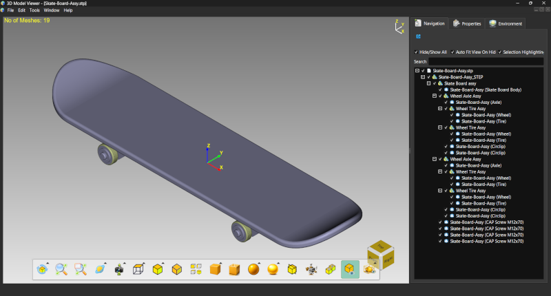
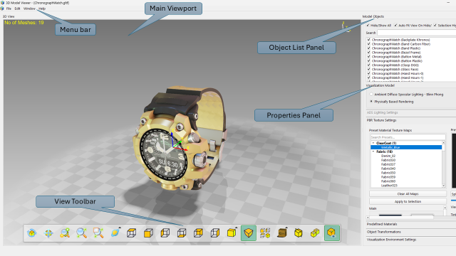

Lesson 1 of 14
Lesson 1: Getting Started
Welcome to ModelViewer!
ModelViewer is a powerful 3D model visualization application that supports various file formats including OBJ, STL, glTF, FBX, and CAD formats like STEP, IGES, and BREP.
This tutorial will guide you through all the features and help you become proficient with the application.

The ModelViewer main window showing the 3D viewport, object list, and control panelsInterface Overview
The ModelViewer interface consists of several key areas:
Step 1: Main Viewport
The large central area where your 3D models are displayed and manipulated. This is your primary workspace.
Step 2: Object List Panel (Left)
Shows all objects in your scene. Click to select objects, use checkboxes to control visibility, and right-click for context menu options.
Step 3: Properties Panel (Left)
Below the object list, contains tabs for Materials, Textures, Transformations, and Environment settings.
Step 4: View Toolbar (Bottom)
Auto-hiding toolbar at the bottom of the viewport with quick access to view manipulation, camera modes, and display settings.
Step 5: Menu Bar (Top)
Standard menu bar with File, Edit, View, Window, and Help menus for accessing all application features.

Interface areas labeled: Viewport, Object List, Properties, Toolbar, Menu Bar
The view toolbar automatically hides after 2 seconds. Move your mouse to the bottom edge of the viewport to reveal it again.
What You'll Learn
Throughout this tutorial, you will learn:
- How to open and import 3D models
- Navigate the 3D viewport using mouse and keyboard
- Select and manipulate objects
- Use different camera and display modes
- Apply materials and textures
- Configure lighting and environment
- Work with visibility and organization
- Use advanced features like clipping planes
- Optimize performance for large models
You can navigate between lessons using the list on the left, or use the Previous/Next buttons at the bottom. Feel free to jump to any lesson that interests you!